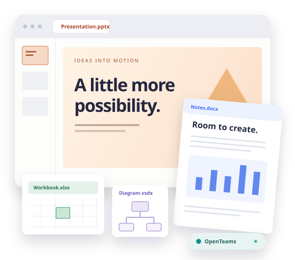

Office, opened up.
Slides and documents that open, edit and present right here in your browser. Nothing to install, and the files you open are read on your own machine.
Local files. Open source. Yours to build on.

Explore the suite
Documents
Find demos, framework bindings and documentation for each file format.
Collaboration
A place for the conversations around your work.
For developers
One core under every app
OOXML owns the format logic. The viewers provide framework bindings, with shared browser controls and supporting codecs underneath. Explore the source by layer. Coverage varies by format; each app documents its current limits.